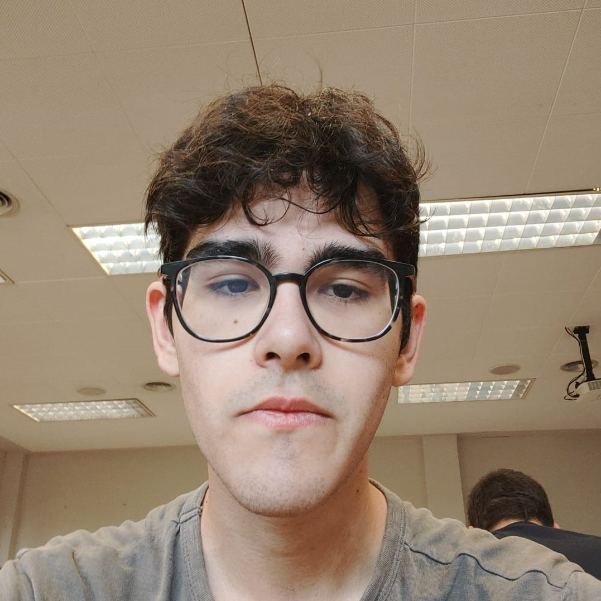

FLORIDAPP
Bienvenid@ al apartado de Miembros del Proyecto Integrado, en esta seccion puedes encontrar informacion
sobre cada uno de los participantes del Equipo Rojo:
Davit:

Conocido como Davit Costa Martinez, es un integrante del equipo rojo el cual su ROL en el equipo es Diseñador UML/Base de Datos, si desea contactar con el lo puede hacer con su correo electronico: dacoma@floridauniversitaria.es

Conocido como Haitian Ji, es un integrante del equipo rojo el cual su ROL en el equipo es Programador de todas las asignaturas, si deseas contactar con el lo puede hacer con su correo electronico: haji@floridauniversitaria.es

Conocido como Ivan Lopez Camacho, es un integrante del quipo rojo el cual su ROL en el equipo es Diseñador UML/Base de Datos, si deseas contactar con el lo puede hacer con su correo electronico: ivloca@floridauniversitaria.es
Conocido como Marcos Simon Caballero, es un integrante del quipo rojo el cual su ROL en el equipo es Diseñador HTML/Soporte Interfaz, si deseas contactar con el lo puede hacer con su correo electronico: masica@floridauniversitaria.es

Conocido como Gabriel Argente Aguilera, es un integrante del quipo rojo el cual su ROL en el equipo es Diseñador HTML/Soporte Interfaz, si deseas contactar con el lo puede hacer con su correo electronico: gaarag@floridauniversitaria.es

Conocido como Diego Sanchez Tinajero Rubio, es un integrante del quipo rojo el cual su ROL en el equipo es Diseñador HTML/Soporte Interfaz, si deseas contactar con el lo puede hacer con su correo electronico: disaru@floridauniversitaria.es